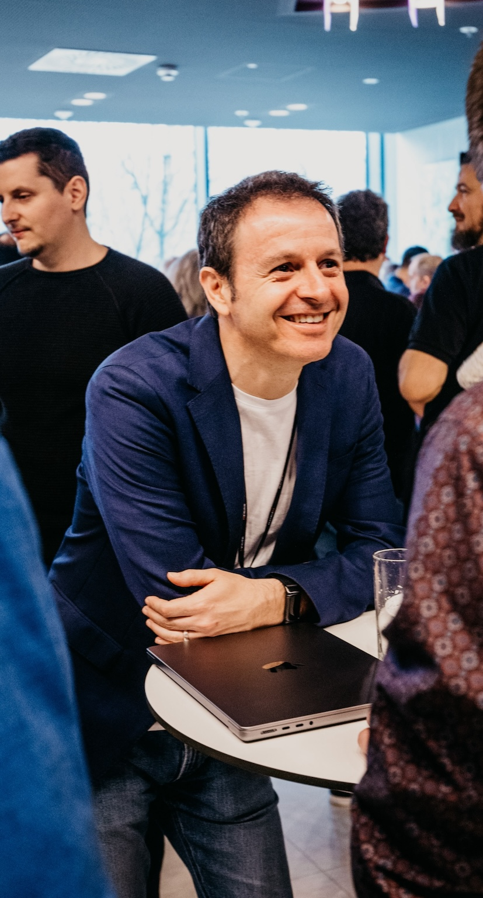

About

This repository serves as a curated collection of experiments, how to's and musings, courtesy of the author, crafted during those fleeting moments of respite from the professional and personal arenas -- a rarity, akin to finding a parking spot at peak hours. As such, readers are advised to approach these writings with a discerning eye and a generous pinch (or perhaps a handful) of skepticism.
Covering a spectrum of topics from software development and machine learning to perhaps one or the other personal topic, what you find here may offer insights that range from interesting to pointless, with no guarantees of accuracy or coherence.
Hailing from a software architecture background, I have navigated the software industry's turbulent waters for more years than I'm inclined to enumerate. In the past I have lived in a few different countries, and have been fortunate to work with a broad set of people, from whom I have learned a great deal. People have been the backbone of my professional and personal journey, and I have been fortunate to have met and worked with some who were patient enough to teach me a thing or two.
As the usual disclaimer, the views expressed here are my own and do not necessarily reflect the views of my employer, or any other entity with which I have been associated with.